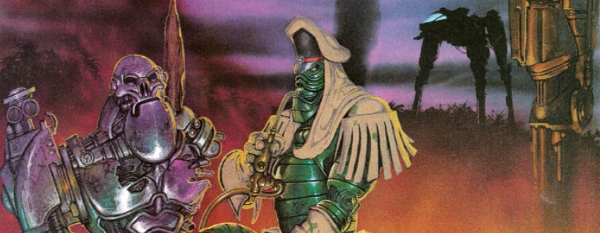

Blackblood
Blackblood is a main character in The A.B.C. Warriors, and his prototype model can also be seen in some episodes of Savage, but here he gets a couple of episodes under his own (presumably treacherous) banner.
Art by Kevin Walker
| Story Title | Parts | Pages | w indicates a wraparound coverCovers | Year(s) | Issues | Writer | Artist | Colourist | Letterer |
|---|---|---|---|---|---|---|---|---|---|
Linked to The A.B.C. WarriorsDishonourable Discharge | 1 | 8 | 0 | 1992 | Reprints: http://content.2000adonline.com/FCBD2017/Blackblood.pdf WS4 | Pat Mills | Kevin Walker | <-- | Annie Parkhouse |
Linked to The A.B.C. WarriorsGeneral Public | 1 | 6 | 0 | 2017 | FCBD7 | Pat Mills | Kei Zama | [spot color] | Sam Gretton |
| Features | |||||||||
From The A.B.C. WarriorsFact File: Blackblood | 1 | 1 | 0 | 1985 | 399 | Pat Mills | Mike McMahon [reprint] | [b&w] | Peter Knight [reprint] |
| year | episodes | pages |
| 1977 | 0 | 0 |
| 1978 | 0 | 0 |
| 1979 | 0 | 0 |
| 1980 | 0 | 0 |
| 1981 | 0 | 0 |
| 1982 | 0 | 0 |
| 1983 | 0 | 0 |
| 1984 | 0 | 0 |
| 1985 | 0 | 0 |
| 1986 | 0 | 0 |
| 1987 | 0 | 0 |
| 1988 | 0 | 0 |
| 1989 | 0 | 0 |
| 1990 | 0 | 0 |
| 1991 | 0 | 0 |
| 1992 | 1 | 8 |
| 1993 | 0 | 0 |
| 1994 | 0 | 0 |
| 1995 | 0 | 0 |
| 1996 | 0 | 0 |
| 1997 | 0 | 0 |
| 1998 | 0 | 0 |
| 1999 | 0 | 0 |
| 2000 | 0 | 0 |
| 2001 | 0 | 0 |
| 2002 | 0 | 0 |
| 2003 | 0 | 0 |
| 2004 | 0 | 0 |
| 2005 | 0 | 0 |
| 2006 | 0 | 0 |
| 2007 | 0 | 0 |
| 2008 | 0 | 0 |
| 2009 | 0 | 0 |
| 2010 | 0 | 0 |
| 2011 | 0 | 0 |
| 2012 | 0 | 0 |
| 2013 | 0 | 0 |
| 2014 | 0 | 0 |
| 2015 | 0 | 0 |
| 2016 | 0 | 0 |
| 2017 | 1 | 6 |
| 2018 | 0 | 0 |
| 2019 | 0 | 0 |
| 2020 | 0 | 0 |
| 2021 | 0 | 0 |